🕵️ 风声再临
The Message · 设计:Tobey Ho · 千骐动漫出版 · 3–7 人 · 谍战阵营推理(简体中文规则书全文转录)
本页整理自集石《风声再临》词条所载中文规则书(来源标注:出版商,2018-12-30 发布)扫描件,共 17 页逐页全文转录,扫描图随文嵌入——点击任意图片即可放大查看。规则内容归 Tobey Ho、千骐动漫及版权方所有,转录仅供个人学习查阅。
整理说明:原文将简介页连贴两次,本页已去重,全书 17 页按序收录;原书个别页脚印有页码(较本页图序大 1,系实体书扉页未随文发布所致)。简体原样照录、未作繁简转换;卡牌美术字卡名为繁体(識破、調包、機密文件、戴笠、刀鋒、小馬哥、貝雷帽、福爾摩斯、情報處長、禮服蒙面、職業殺手等),照原样保留;卡面图样小字以引用块照录,与主栏正文的细微差异系原书即有;卡面竖排装饰小字在扫描分辨率下无法辨认处以〔?〕标注,未按常识补全;「选择N张手牌跟原情报洗混」「所指指定的玩家关系将在游戏中一直存在。」等原书措辞均照录。
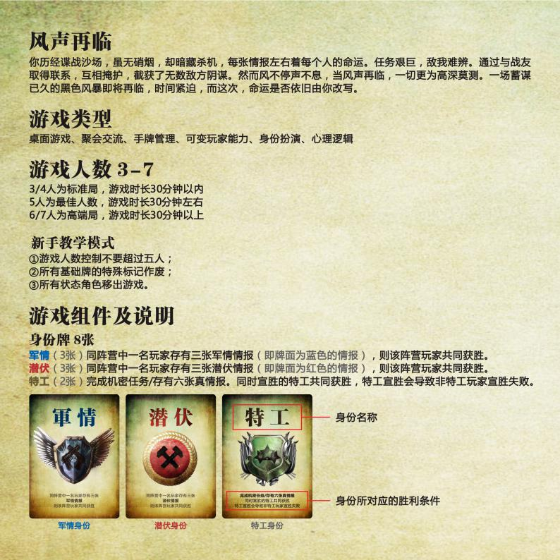
风声再临
你历经谍战沙场，虽无硝烟，却暗藏杀机，每张情报左右着每个人的命运。任务艰巨，敌我难辨。通过与战友取得联系，互相掩护，截获了无数敌方阴谋。然而风不停声不息，当风声再临，一切更为高深莫测。一场蓄谋已久的黑色风暴即将再临，时间紧迫，而这次，命运是否依旧由你改写。
游戏类型
桌面游戏、聚会交流、手牌管理、可变玩家能力、身份扮演、心理逻辑
游戏人数 3-7
3/4人为标准局，游戏时长30分钟以内
5人为最佳人数，游戏时长30分钟左右
6/7人为高端局，游戏时长30分钟以上
新手教学模式
①游戏人数控制不要超过五人；
②所有基础牌的特殊标记作废；
③所有状态角色移出游戏。
游戏组件及说明
身份牌 8张
军情（3张）同阵营中一名玩家存有三张军情情报（即牌面为蓝色的情报），则该阵营玩家共同获胜。
潜伏（3张）同阵营中一名玩家存有三张潜伏情报（即牌面为红色的情报），则该阵营玩家共同获胜。
特工（2张）完成机密任务/存有六张真情报。同时宣胜的特工共同获胜，特工宣胜会导致非特工玩家宣胜失败。
卡牌图样（卡面正文小字模糊，未转录）：
军 情
军情身份
潜 伏
潜伏身份
特 工
特工身份
图中标注文字：身份名称（指向"特工"卡牌名）；身份所对应的胜利条件（指向特工卡红框内文字）。
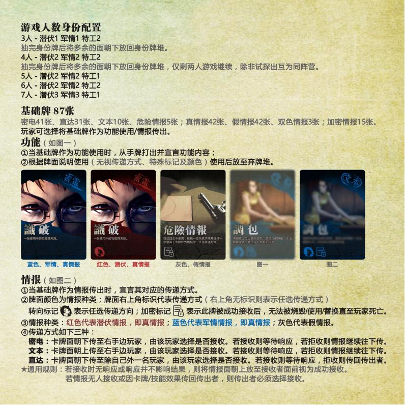
游戏人数身份配置
3人：潜伏1 军情1 特工2 抽完身份牌后将多余的面朝下放回身份牌堆。
4人：潜伏2 军情2 特工2 抽完身份牌后将多余的面朝下放回身份牌堆，仅剩两人游戏继续，除非试探出互为同阵营。
5人：潜伏2 军情2 特工1 6人：潜伏2 军情2 特工2 7人：潜伏3 军情3 特工1
基础牌 87张
密电41张、直达31张、文本10张、危险情报5张；真情报42张、假情报42张、双色情报3张；加密情报15张。 玩家可选择将基础牌作为功能使用/情报传出。
功能（如图一）
①当基础牌作为功能使用时，从手牌打出并宣言功能内容； ②根据牌面说明使用（无视传递方式、特殊标记及颜色）使用后放至弃牌堆。
图中卡牌图样（图一）：
識破（蓝色、军情、真情报）
一张使用中的功能牌无效。
識破（红色、潜伏、真情报）
一张使用中的功能牌无效。
危險情報（灰色、假情报）
〔牌面小字模糊，不录〕
調包（图一）
〔牌面小字模糊，不录〕
（图二卡牌图样卡名模糊，不录）
情报（如图二）
①当基础牌作为情报传出时，宣言其对应的传递方式。 ②牌面颜色为情报种类；牌面右上角标识代表传递方式（右上角无标识则表示任选传递方式） 转向标记〔图标〕表示任选传递方向；加密标记〔图标〕表示此牌被成功接收后，无法被烧毁/使用/替换直至玩家死亡。 ③情报种类：红色代表潜伏情报，即真情报；蓝色代表军情情报，即真情报；灰色代表假情报。 ④传递方式如下三种： 密电：卡牌面朝下传至右手边玩家，由该玩家选择是否接收。若接收则等待响应，若拒收则情报继续往下传。 文本：卡牌面朝上传至右手边玩家，由该玩家选择是否接收。若接收则等待响应，若拒收则情报继续往下传。 直达：卡牌面朝下传至除自己外一名玩家，由该玩家选择是否接收。若接收则等待响应，拒收则传回传出者。 ★通用规则：若接收时无响应或响应并不影响结果，则将情报面朝上放至接收者面前视为成功接收。 若情报无人接收或因 卡牌/技能 效果传回传出者，则传出者必须选择接收。
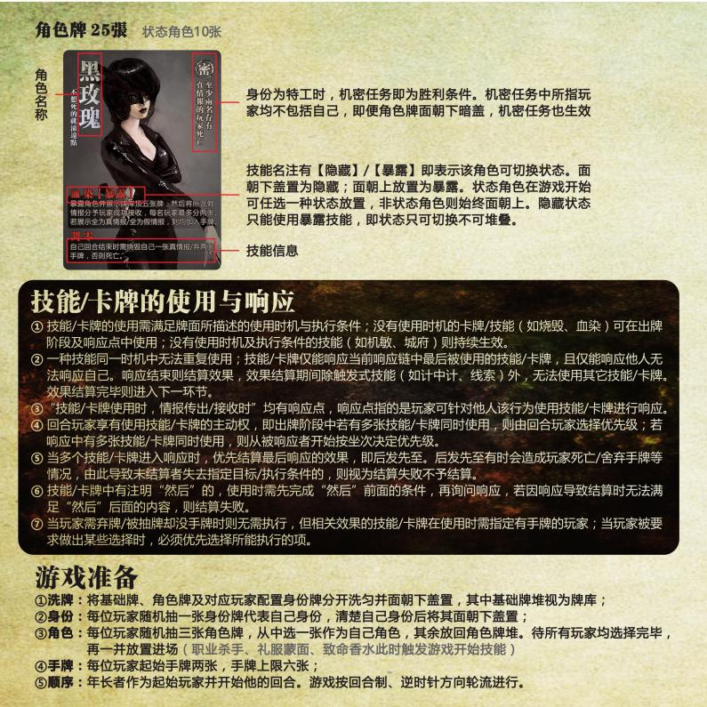
角色牌 25张 状态角色10张
角色牌图样（示例）
角色名称：黑玫瑰 〔牌面竖排小字及右上角印记模糊，不录〕 〔技能信息（牌面下方红色技能文字）模糊，不录〕
图中标注说明：
身份为特工时，机密任务即为胜利条件。机密任务中所指玩家均不包括自己，即便角色牌面朝下暗盖，机密任务也生效
技能名注有【隐藏】/【暴露】即表示该角色可切换状态。面朝下盖置为隐藏；面朝上放置为暴露。状态角色在游戏开始可任选一种状态放置，非状态角色则始终面朝上。隐藏状态只能使用暴露技能，即状态只可切换不可堆叠。
技能信息（标注指向牌面下方红色技能文字区域）
技能/卡牌的使用与响应
①技能/卡牌的使用需满足牌面所描述的使用时机与执行条件；没有使用时机的卡牌/技能（如烧毁、血染）可在出牌阶段及响应点中使用；没有使用时机及执行条件的技能（如机敏、城府）则持续生效。 ②一种技能同一时机中无法重复使用；技能/卡牌仅能响应当前响应链中最后被使用的技能/卡牌，且仅能响应他人无法响应自己。响应结束则结算效果，效果结算期间除触发式技能（如计中计、线索）外，无法使用其它技能/卡牌。效果结算完毕则进入下一环节。 ③"技能/卡牌使用时，情报传出/接收时" 均有响应点，响应点指的是玩家可针对他人该行为使用技能/卡牌进行响应。 ④回合玩家享有使用技能/卡牌的主动权，即出牌阶段中若有多张技能/卡牌同时使用，则由回合玩家选择优先级；若响应中有多张技能/卡牌同时使用，则从被响应者开始按坐次决定优先级。 ⑤当多个技能/卡牌进入响应时，优先结算最后响应的效果，即后发先至。后发先至有时会造成玩家死亡/舍弃手牌等情况，由此导致未结算者失去指定目标/执行条件的，则视为结算失败不予结算。 ⑥技能/卡牌中有注明 "然后" 的，使用时需先完成 "然后" 前面的条件，再询问响应，若因响应导致结算时无法满足 "然后" 后面的内容，则结算失败。 ⑦当玩家需弃牌/被抽牌却没手牌时则无需执行，但相关效果的技能/卡牌在使用时需指定有手牌的玩家；当玩家被要求做出某些选择时，必须优先选择所能执行的项。
游戏准备
①洗牌：将基础牌、角色牌及对应玩家配置身份牌分开洗匀并面朝下盖置，其中基础牌堆视为牌库； ②身份：每位玩家随机抽一张身份牌代表自己身份，清楚自己身份后将其面朝下盖置； ③角色：每位玩家随机抽三张角色牌，从中选一张作为自己角色，其余放回角色牌堆。待所有玩家均选择完毕，再一并放置进场（职业杀手、礼服蒙面、致命香水此时触发游戏开始技能） ④手牌：每位玩家起始手牌两张，手牌上限六张； ⑤顺序：年长者作为起始玩家并开始他的回合。游戏按回合制、逆时针方向轮流进行。
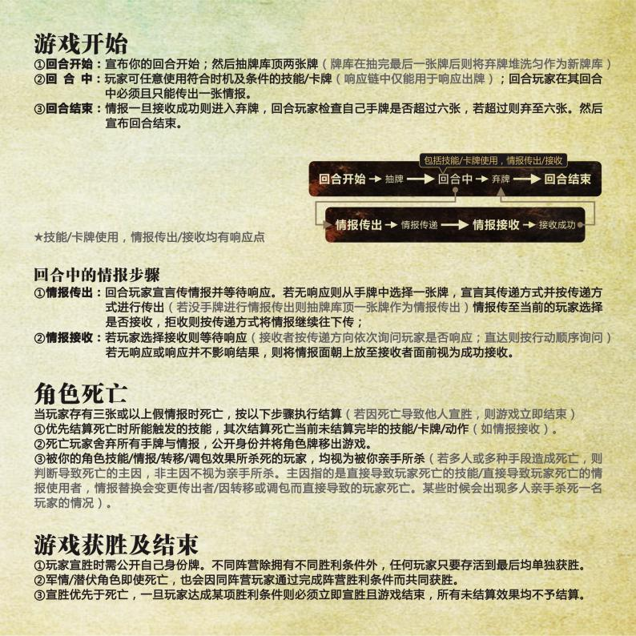
风声再临 · 规则书 第 5 页（图像转录）
游戏开始
①回合开始：宣布你的回合开始；然后抽牌库顶两张牌（牌库在抽完最后一张牌后则将弃牌堆洗匀作为新牌库）
②回 合 中：玩家可任意使用符合时机及条件的技能/卡牌（响应链中仅能用于响应出牌）；回合玩家在其回合中必须且只能传出一张情报。
③回合结束：情报一旦接收成功则进入弃牌，回合玩家检查自己手牌是否超过六张，若超过则弃至六张。然后宣布回合结束。
图示：
回合开始 → 抽牌 ⟶ 回合中 → 弃牌 ⟶ 回合结束
（"回合中"上方标注框：包括技能/卡牌使用，情报传出/接收）
情报传出 → 情报传递 ⟶ 情报接收 → 接收成功
（"回合中"下方有连线引出、以箭头指向"情报传出"；"接收成功"处有连线以箭头指回"弃牌"）
★技能/卡牌使用，情报传出/接收均有响应点
回合中的情报步骤
①情报传出：回合玩家宣言传情报并等待响应。若无响应则从手牌中选择一张牌，宣言其传递方式并按传递方式进行传出（若没手牌进行情报传出则抽牌库顶一张牌作为情报传出）情报传至当前的玩家选择是否接收，拒收则按传递方式将情报继续往下传；
②情报接收：若玩家选择接收则等待响应（接收者按传递方向依次询问玩家是否响应；直达则按行动顺序询问）若无响应或响应并不影响结果，则将情报面朝上放至接收者面前视为成功接收。
角色死亡
当玩家存有三张或以上假情报时死亡，按以下步骤执行结算（若因死亡导致他人宣胜，则游戏立即结束）
①优先结算死亡时所能触发的技能，其次结算死亡当前未结算完毕的技能/卡牌/动作（如情报接收）。
②死亡玩家舍弃所有手牌与情报，公开身份并将角色牌移出游戏。
③被你的角色技能/情报/转移/调包效果所杀死的玩家，均视为被你亲手所杀（若多人或多种手段造成死亡，则判断导致死亡的主因，非主因不视为亲手所杀。主因指的是直接导致玩家死亡的技能/直接导致玩家死亡的情报使用者，情报替换会变更传出者/因转移或调包而直接导致的玩家死亡。某些时候会出现多人亲手杀死一名玩家的情况）。
游戏获胜及结束
①玩家宣胜时需公开自己身份牌。不同阵营除拥有不同胜利条件外，任何玩家只要存活到最后均单独获胜。
②军情/潜伏角色即使死亡，也会因同阵营玩家通过完成阵营胜利条件而共同获胜。
③宣胜优先于死亡，一旦玩家达成某项胜利条件则必须立即宣胜且游戏结束，所有未结算效果均不予结算。
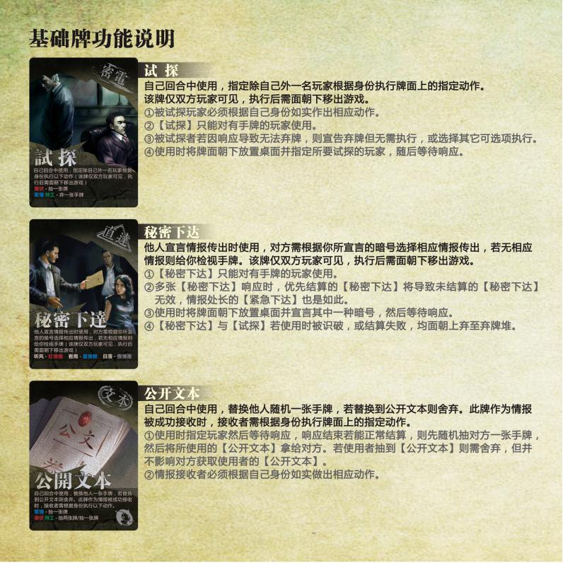
风声再临 · 规则书 第 6 页（图像转录）
基础牌功能说明
试 探
自己回合中使用，指定除自己外一名玩家根据身份执行牌面上的指定动作。 该牌仅双方玩家可见，执行后需面朝下移出游戏。
①被试探玩家必须根据自己身份如实作出相应动作。
②【试探】只能对有手牌的玩家使用。
③被试探者若因响应导致无法弃牌，则宣告弃牌但无需执行，或选择其它可选项执行。
④使用时将牌面朝下放置桌面并指定所要试探的玩家，随后等待响应。
卡图文字：角标「密電」，牌名「試探」（卡面小字模糊，不录）。
秘密下达
他人宣言情报传出时使用，对方需根据你所宣言的暗号选择相应情报传出，若无相应情报则给你检视手牌。该牌仅双方玩家可见，执行后需面朝下移出游戏。
①【秘密下达】只能对有手牌的玩家使用。
②多张【秘密下达】响应时，优先结算的【秘密下达】将导致未结算的【秘密下达】无效，情报处长的【紧急下达】也是如此。
③使用时将牌面朝下放置桌面并宣言其中一种暗号，然后等待响应。
④【秘密下达】与【试探】若使用时被识破，或结算失败，均面朝上弃至弃牌堆。
卡图文字：角标「直達」，牌名「秘密下達」（卡面小字模糊，不录）。
公开文本
自己回合中使用，替换他人随机一张手牌，若替换到公开文本则舍弃。此牌作为情报被成功接收时，接收者需根据身份执行牌面上的指定动作。
①使用时指定玩家然后等待响应，响应结束若能正常结算，则先随机抽对方一张手牌，然后将所使用的【公开文本】拿给对方。若使用者抽到【公开文本】则需舍弃，但并不影响对方获取使用者的【公开文本】。
②情报接收者必须根据自己身份如实做出相应动作。
卡图文字：角标（印章样式）「文本」，牌名「公開文本」（卡面小字模糊，不录）。
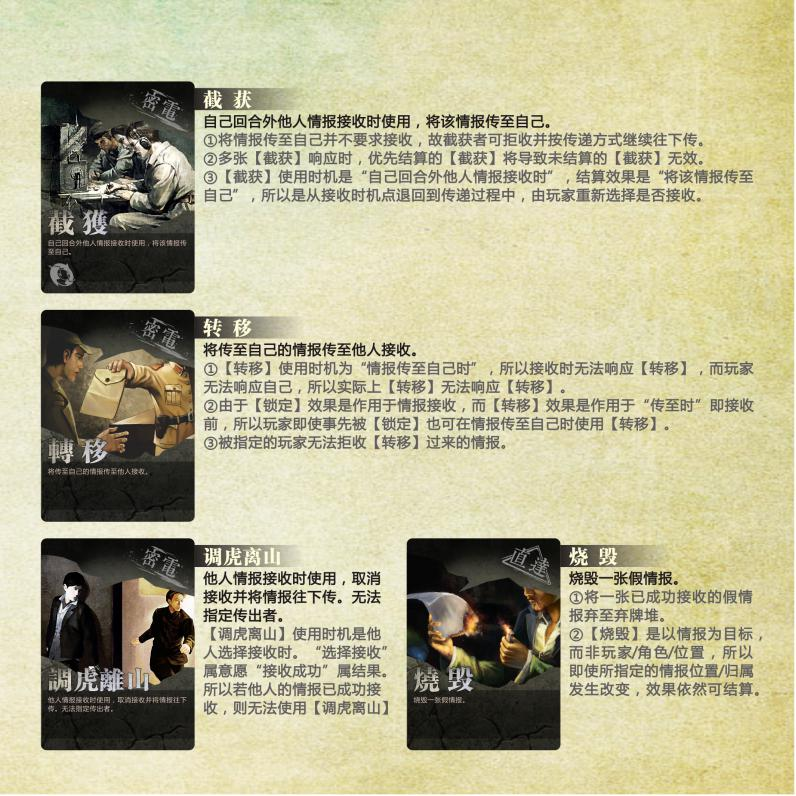
《风声再临》规则书 第 7 页
截 获
自己回合外他人情报接收时使用，将该情报传至自己。
①将情报传至自己并不要求接收，故截获者可拒收并按传递方式继续往下传。
②多张【截获】响应时，优先结算的【截获】将导致未结算的【截获】无效。
③【截获】使用时机是“自己回合外他人情报接收时”，结算效果是“将该情报传至自己”，所以是从接收时机点退回到传递过程中，由玩家重新选择是否接收。
卡牌图样（截獲）：自己回合外他人情报接收时使用，将该情报传至自己。
转 移
将传至自己的情报传至他人接收。
①【转移】使用时机为“情报传至自己时”，所以接收时无法响应【转移】，而玩家无法响应自己，所以实际上【转移】无法响应【转移】。
②由于【锁定】效果是作用于情报接收，而【转移】效果是作用于“传至时”即接收前，所以玩家即使事先被【锁定】也可在情报传至自己时使用【转移】。
③被指定的玩家无法拒收【转移】过来的情报。
卡牌图样（轉移）：将传至自己的情报传至他人接收。
调虎离山
他人情报接收时使用，取消接收并将情报往下传。无法指定传出者。
【调虎离山】使用时机是他人选择接收时。“选择接收”属意愿“接收成功”属结果。所以若他人的情报已成功接收，则无法使用【调虎离山】
卡牌图样（調虎離山）：他人情报接收时使用，取消接收并将情报往下传，无法指定传出者。
烧 毁
烧毁一张假情报。
①将一张已成功接收的假情报弃至弃牌堆。
②【烧毁】是以情报为目标，而非玩家/角色/位置，所以即使所指定的情报位置/归属发生改变，效果依然可结算。
卡牌图样（燒毀）：烧毁一张假情报。
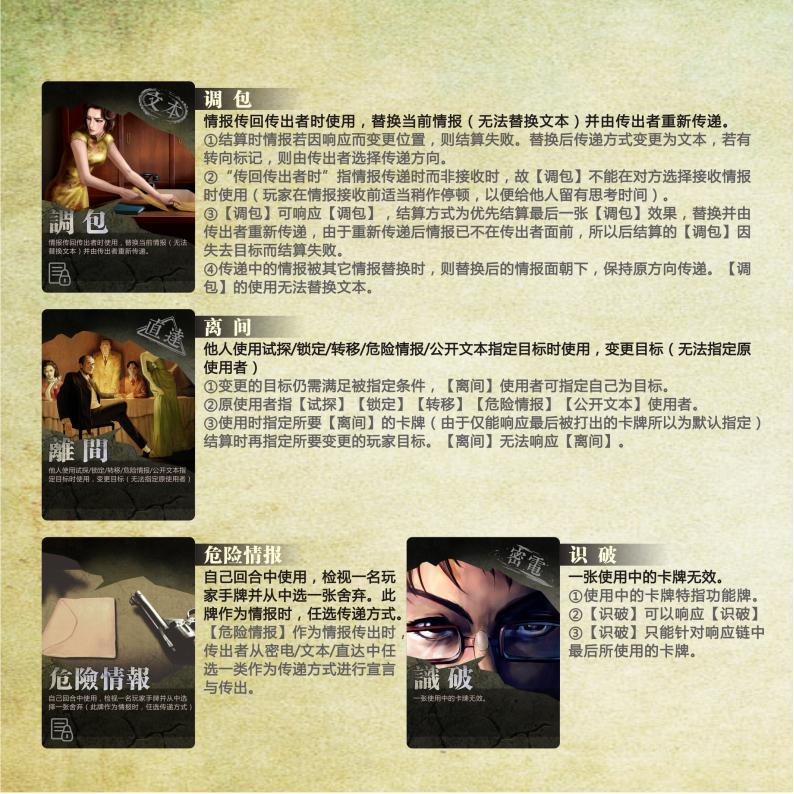
《风声再临》规则书 第 8 页
调 包
情报传回传出者时使用，替换当前情报（无法替换文本）并由传出者重新传递。
①结算时情报若因响应而变更位置，则结算失败。替换后传递方式变更为文本，若有转向标记，则由传出者选择传递方向。
②“传回传出者时”指情报传递时而非接收时，故【调包】不能在对方选择接收情报时使用（玩家在情报接收前适当稍作停顿，以便给他人留有思考时间）。
③【调包】可响应【调包】，结算方式为优先结算最后一张【调包】效果，替换并由传出者重新传递，由于重新传递后情报已不在传出者面前，所以后结算的【调包】因失去目标而结算失败。
④传递中的情报被其它情报替换时，则替换后的情报面朝下，保持原方向传递。【调包】的使用无法替换文本。
卡牌图样（調包）：情报传回传出者时使用，替换当前情报（无法替换文本）并由传出者重新传递。
离 间
他人使用试探/锁定/转移/危险情报/公开文本指定目标时使用，变更目标（无法指定原使用者）
①变更的目标仍需满足被指定条件，【离间】使用者可指定自己为目标。
②原使用者指【试探】【锁定】【转移】【危险情报】【公开文本】使用者。
③使用时指定所要【离间】的卡牌（由于仅能响应最后被打出的卡牌所以为默认指定）结算时再指定所要变更的玩家目标。【离间】无法响应【离间】。
卡牌图样（離間）：他人使用试探/锁定/转移/危险情报/公开文本指定目标时使用，变更目标（无法指定原使用者）
危险情报
自己回合中使用，检视一名玩家手牌并从中选一张舍弃。此牌作为情报时，任选传递方式。
【危险情报】作为情报传出时，传出者从密电/文本/直达中任选一类作为传递方式进行宣言与传出。
卡牌图样（危險情報）：自己回合中使用，检视一名玩家手牌并从中选择一张舍弃（此牌作为情报时，任选传递方式）
识 破
一张使用中的卡牌无效。
①使用中的卡牌特指功能牌。
②【识破】可以响应【识破】
③【识破】只能针对响应链中最后所使用的卡牌。
卡牌图样（識破）：一张使用中的卡牌无效。
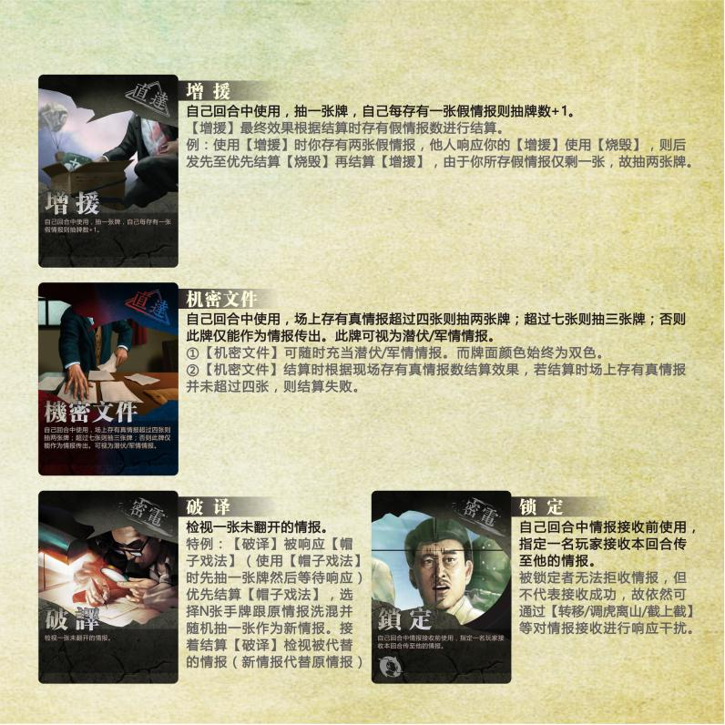
《风声再临》规则书 第 9 页
增 援
自己回合中使用，抽一张牌，自己每存有一张假情报则抽牌数+1。
【增援】最终效果根据结算时存有假情报数进行结算。
例：使用【增援】时你存有两张假情报，他人响应你的【增援】使用【烧毁】，则后发先至优先结算【烧毁】再结算【增援】，由于你所存假情报仅剩一张，故抽两张牌。
卡牌图样（增援）：自己回合中使用，抽一张牌，自己每存有一张假情报则抽牌数+1。
机密文件
自己回合中使用，场上存有真情报超过四张则抽两张牌；超过七张则抽三张牌；否则此牌仅能作为情报传出。此牌可视为潜伏/军情情报。
①【机密文件】可随时充当潜伏/军情情报。而牌面颜色始终为双色。
②【机密文件】结算时根据现场存有真情报数结算效果，若结算时场上存有真情报并未超过四张，则结算失败。
卡牌图样（機密文件）：自己回合中使用，场上存有真情报超过四张则抽两张牌；超过七张则抽三张牌；否则此牌仅能作为情报传出。
破 译
检视一张未翻开的情报。
特别：【破译】被响应【帽子戏法】（使用【帽子戏法】时先抽一张牌然后等待响应）优先结算【帽子戏法】，选择N张手牌跟原情报洗混并随机抽一张作为新情报。接着结算【破译】检视被代替的情报（新情报代替原情报）
卡牌图样（破譯）：检视一张未翻开的情报。
锁 定
自己回合中情报接收前使用，指定一名玩家接收本回合传至他的情报。
被锁定者无法拒收情报，但不代表接收成功，故依然可通过【转移/调虎离山/截上截】等对情报接收进行响应干扰。
卡牌图样（鎖定）：自己回合中情报接收前使用，指定一名玩家接收本回合传至他的情报。
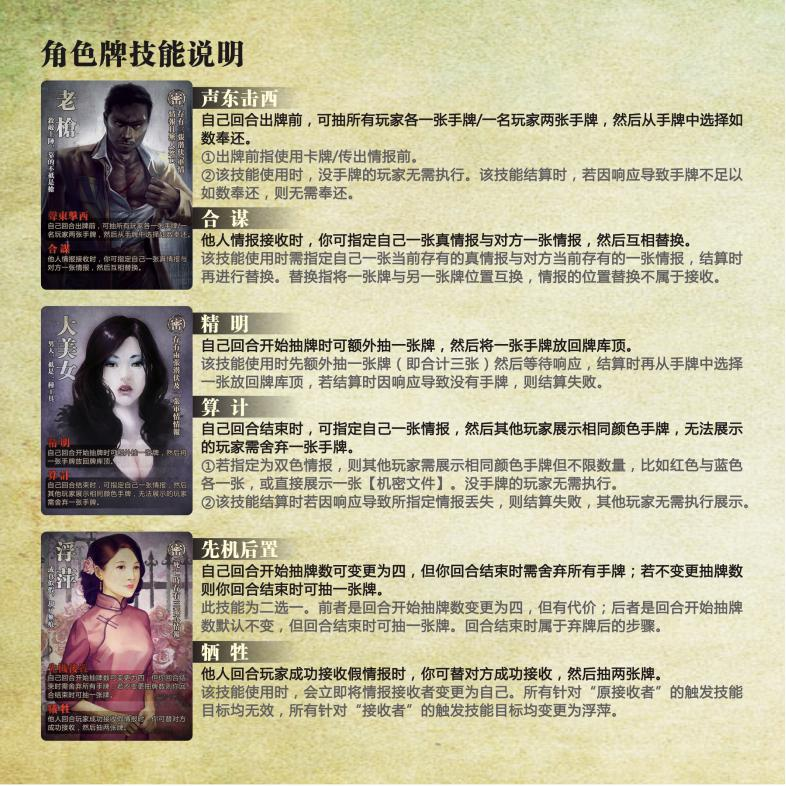
角色牌技能说明
老枪
声东击西
自己回合出牌前，可抽所有玩家各一张手牌/一名玩家两张手牌，然后从手牌中选择如数奉还。
①出牌前指使用卡牌/传出情报前。
②该技能使用时，没手牌的玩家无需执行。该技能结算时，若因响应导致手牌不足以如数奉还，则无需奉还。
合 谍
他人情报接收时，你可指定自己一张真情报与对方一张情报，然后互相替换。
该技能使用时需指定自己一张当前存有的真情报与对方当前存有的一张情报，结算时再进行替换。替换指将一张牌与另一张牌位置互换，情报的位置替换不属于接收。
卡图小字：声东击西——自己回合出牌前，可抽所有玩家各一张手牌/一名玩家两张手牌，然后从手牌中选择如数奉还。
卡图小字：合 谍——他人情报接收时，你可指定自己一张真情报与对方一张情报，然后互相替换。
卡图竖排小字：〔?〕
大美女
精 明
自己回合开始抽牌时可额外抽一张牌，然后将一张手牌放回牌库顶。
该技能使用时先额外抽一张牌（即合计三张）然后等待响应，结算时再从手牌中选择一张放回牌库顶，若结算时因响应导致没有手牌，则结算失败。
算 计
自己回合结束时，可指定自己一张情报，然后其他玩家展示相同颜色手牌，无法展示的玩家需舍弃一张手牌。
①若指定为双色情报，则其他玩家需展示相同颜色手牌但不限数量，比如红色与蓝色各一张，或直接展示一张【机密文件】。没手牌的玩家无需执行。
②该技能结算时若因响应导致所指定情报丢失，则结算失败，其他玩家无需执行展示。
卡图小字：精 明——自己回合开始抽牌时可额外抽一张牌，然后将一张手牌放回牌库顶。
卡图小字：算 计——自己回合结束时，可指定自己一张情报，然后其他玩家展示相同颜色手牌，无法展示的玩家需舍弃一张手牌。
卡图竖排小字：〔?〕〔?〕
浮萍
先机后置
自己回合开始抽牌数可变更为四，但你回合结束时需舍弃所有手牌；若不变更抽牌数则你回合结束时可抽一张牌。
此技能为二选一。前者是回合开始抽牌数变更为四，但有代价；后者是回合开始抽牌数默认不变，但回合结束时可抽一张牌。回合结束时属于弃牌后的步骤。
牺 牲
他人回合玩家成功接收假情报时，你可替对方成功接收，然后抽两张牌。
该技能使用时，会立即将情报接收者变更为自己。所有针对“原接收者”的触发技能目标均无效，所有针对“接收者”的触发技能目标均变更为浮萍。
卡图小字：先机后置——自己回合开始抽牌数可变更为四，但你回合结束时要舍弃所有手牌。若不变更抽牌数则回合结束时可抽一张牌。
卡图小字：牺 牲——他人回合玩家成功接收假情报时，你可替对方成功接收，然后抽两张牌。
卡图竖排小字：〔?〕〔?〕
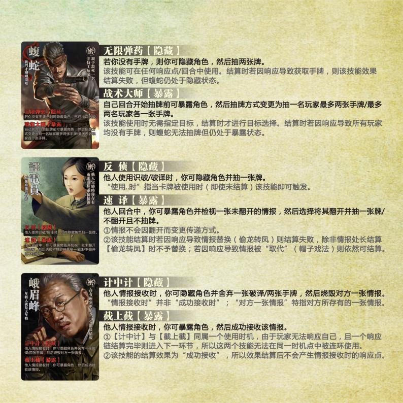
蝮蛇
无限弹药【隐藏】
若你没有手牌，则你可隐藏角色，然后抽两张牌。
该技能可在任何响应点/回合中使用。结算时若因响应导致获取手牌，则该技能效果结算失败，但蝮蛇仍处于隐藏状态。
战术大师【暴露】
自己回合开始抽牌前可暴露角色，然后抽牌方式变更为抽一名玩家最多两张手牌/最多两名玩家各一张手牌。
该技能使用时无需指定目标，结算时才进行目标选择。结算时若因响应导致所有玩家均没有手牌，则蝮蛇无法抽牌但仍处于暴露状态。
卡图小字：无限弹药【隐藏】——若你没有手牌，则可隐藏角色，然后抽两张牌。
卡图小字：战术大师【暴露】——自己回合开始抽牌前可暴露角色，然后抽牌方式变更为抽一名玩家最多两张手牌/最多两名玩家各一张手牌。
卡图竖排小字：〔?〕〔?〕
譚電員
反 侦【隐藏】
他人使用识破/破译时，你可隐藏角色并抽一张牌。
“使用..时”指当卡牌被使用时（即使未结算）该技能即可触发。
速 译【暴露】
他人回合中，你可暴露角色并检视一张未翻开的情报，然后选择将其翻开并抽一张牌/不翻开且不抽牌。
①情报不会因翻开而变更传递方式。
②该技能结算时若因响应导致情报替换（偷龙转凤）则结算失败，除非情报处长结算【偷龙转凤】时不予替换；若因响应导致情报被“取代”（帽子戏法）则依然可结算。
卡图小字：反 侦【隐藏】——他人使用识破/破译时，你可隐藏角色并抽一张牌。
卡图小字：速 译【暴露】——他人回合中，你可暴露角色并检视一张未翻开的情报，然后选择将其翻开并抽一张牌/不翻开且不抽牌。
卡图竖排小字：〔?〕〔?〕
峨眉峰
计中计【隐藏】
他人情报接收时，你可隐藏角色并舍弃一张破译/两张手牌，然后烧毁对方一张情报。
“情报接收时”并非“成功接收时”；“对方一张情报”特指对方所存有的一张情报。
截上截【暴露】
他人情报接收时，你可暴露角色，然后成功接收该情报。
①【计中计】与【截上截】同属一个使用时机，由于玩家无法响应自己，且一个响应链结算完毕则进入下一环节，所以这两个技能无法在同一时机点中被连环使用。
②该技能的结算效果为“成功接收”，所以效果结算后不会产生情报接收时的响应点。
卡图小字：计中计【隐藏】——他人情报接收时，你可隐藏角色并舍弃一张破译/两张手牌，然后烧毁对方一张情报。
卡图小字：截上截【暴露】——他人情报接收时，你可暴露角色，然后成功接收该情报。
卡图竖排小字：年轻人就是太年轻；〔?〕
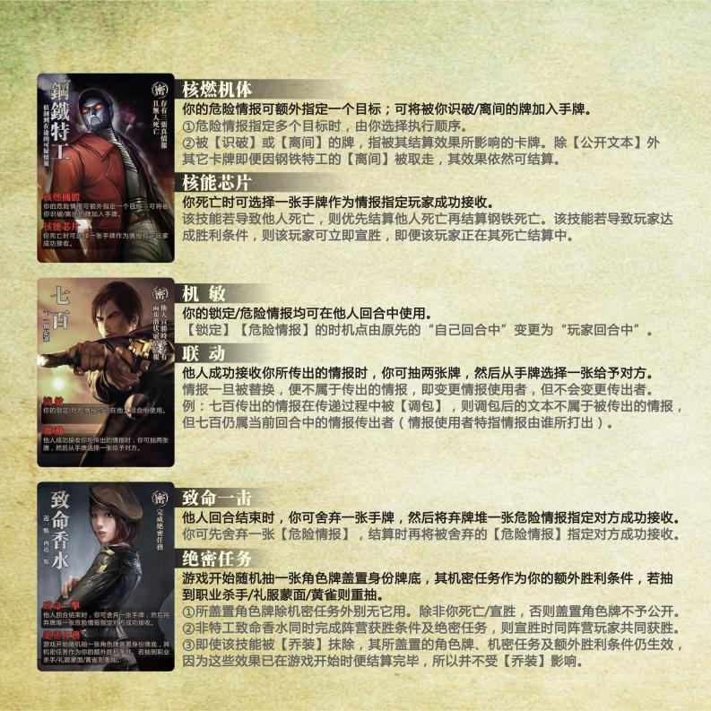
钢铁特工
卡图（左）：牌名竖排「鋼鐵特工」，右上角盖「密」字圆戳。
卡图竖排小字（右侧）：存有三張真情報 且無人死亡
卡图竖排小字（左侧 flavor）：〔?〕
核燃机体
你的危险情报可额外指定一个目标；可将被你识破/离间的牌加入手牌。
①危险情报指定多个目标时，由你选择执行顺序。
②被【识破】或【离间】的牌，指被其结算效果所影响的卡牌。除【公开文本】外其它卡牌即便因钢铁特工的【离间】被取走，其效果依然可结算。
卡图小字（核燃机体）：你的危险情报可额外指定一个目标，可将被你识破/离间的牌加入手牌。
核能芯片
你死亡时可选择一张手牌作为情报指定玩家成功接收。
该技能若导致他人死亡，则优先结算他人死亡再结算钢铁死亡。该技能若导致玩家达成胜利条件，则该玩家可立即宣胜，即便该玩家正在其死亡结算中。
卡图小字（核能芯片）：你死亡时可选择一张手牌作为情报指定玩家成功接收。
七百
卡图（左）：牌名竖排「七百」，右上角盖「密」字圆戳。
卡图竖排小字（右侧两列）：〔?〕
卡图竖排小字（牌名旁）：〔?〕
机敏
你的锁定/危险情报均可在他人回合中使用。
【锁定】【危险情报】的时机点由原先的“自己回合中”变更为“玩家回合中”。
卡图小字（机敏）：你的锁定/危险情报均可在他人回合中使用。
联动
他人成功接收你所传出的情报时，你可抽两张牌，然后从手牌选择一张给予对方。
情报一旦被替换，便不属于传出的情报，即变更情报使用者，但不会变更传出者。
例：七百传出的情报在传递过程中被【调包】，则调包后的文本不属于被传出的情报，但七百仍属当前回合中的情报传出者（情报使用者特指情报由谁所打出）。
卡图小字（联动）：他人成功接收你所传出的情报时，你可抽两张牌，然后从手牌选择一张给予对方。
致命香水
卡图（左）：牌名竖排「致命香水」，右上角盖「密」字圆戳。
卡图竖排小字（右侧）：完成絕密任務
卡图竖排小字（牌名旁）：〔?〕
致命一击
他人回合结束时，你可舍弃一张手牌，然后将弃牌堆一张危险情报指定对方成功接收。
你可先舍弃一张【危险情报】，结算时再将被舍弃的【危险情报】指定对方成功接收。
卡图小字（致命一击）：他人回合结束时，你可舍弃一张手牌，然后将弃牌堆一张危险情报指定对方成功接收。
绝密任务
游戏开始随机抽一张角色牌盖置身份牌底，其机密任务作为你的额外胜利条件，若抽到职业杀手/礼服蒙面/黄雀则重抽。
①所盖置角色牌除机密任务外别无它用。除非你死亡/宣胜，否则盖置角色牌不予公开。
②非特工致命香水同时完成阵营获胜条件及绝密任务，则宣胜时同阵营玩家共同获胜。
③即便该技能被【乔装】抹除，其所盖置的角色牌、机密任务及额外胜利条件仍生效，因为这些效果已在游戏开始时便结算完毕，所以并不受【乔装】影响。
卡图小字（绝密任务）：游戏开始随机抽一张角色牌盖置身份牌底，其机密任务作为你的额外胜利条件，若抽到职业杀手/礼服蒙面/黄雀则重抽。
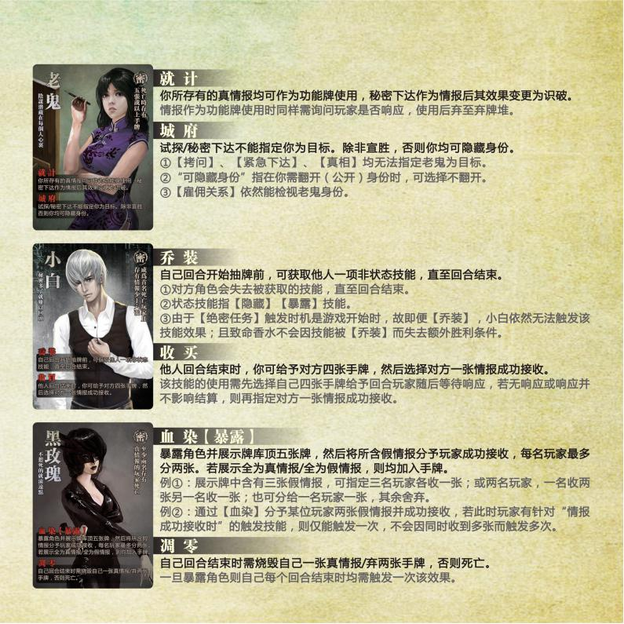
老鬼
卡图（左）：牌名竖排「老鬼」，右上角盖「密」字圆戳。
卡图竖排小字（右侧）：死亡時存有 五張或以上手牌
卡图竖排小字（左侧 flavor）：〔?〕在每個人心〔?〕
就计
你所存有的真情报均可作为功能牌使用，秘密下达作为情报后其效果变更为识破。
情报作为功能牌使用时同样需询问玩家是否响应，使用后弃至弃牌堆。
卡图小字（就计）：你所存有的真情报均可作为功能牌使用，秘密下达作为情报后其效果变更为识破。
城府
试探/秘密下达不能指定你为目标。除非宣胜，否则你均可隐藏身份。
①【拷问】、【紧急下达】、【真相】均无法指定老鬼为目标。
②“可隐藏身份”指在你需翻开（公开）身份时，可选择不翻开。
③【雇佣关系】依然能检视老鬼身份。
卡图小字（城府）：试探/秘密下达不能指定你为目标。除非宣胜，否则你均可隐藏身份。
小白
卡图（左）：牌名竖排「小白」，右上角盖「密」字圆戳。
卡图竖排小字（右侧）：成為首先死亡玩家且 存有情報少於〔?〕張
卡图竖排小字（左侧 flavor）：〔?〕
乔装
自己回合开始抽牌前，可获取他人一项非状态技能，直至回合结束。
①对方角色会失去被获取的技能，直至回合结束。
②状态技能指【隐藏】【暴露】技能。
③由于【绝密任务】触发时机是游戏开始时，故即便【乔装】，小白依然无法触发该技能效果；且致命香水不会因技能被【乔装】而失去额外胜利条件。
卡图小字（乔装）：自己回合开始抽牌前，可获取他人一项非状态技能，直至回合结束。
收买
他人回合结束时，你可给予对方四张手牌，然后选择对方一张情报成功接收。
该技能的使用需先选择自己四张手牌给予回合玩家随后等待响应，若无响应或响应并不影响结算，则再指定对方一张情报成功接收。
卡图小字（收买）：他人回合结束时，你可给予对方四张手牌，然后选择对方一张情报成功接收。
黑玫瑰
卡图（左）：牌名竖排「黑玫瑰」，右上角盖「密」字圆戳。
卡图竖排小字（右侧）：至少兩名存真情報的玩家死亡
卡图竖排小字（左侧 flavor）：〔?〕光的就遮〔?〕
血染【暴露】
暴露角色并展示牌库顶五张牌，然后将所含假情报分予玩家成功接收，每名玩家最多分两张。若展示全为真情报/全为假情报，则均加入手牌。
例①：展示牌中含有三张假情报，可指定三名玩家各收一张；或两名玩家，一名收两张另一名收一张；也可分给一名玩家一张，其余舍弃。
例②：通过【血染】分予某位玩家两张假情报并成功接收，若此时玩家有针对“情报成功接收时”的触发技能，则仅能触发一次，不会因同时收到多张而触发多次。
卡图小字（血染【暴露】）：暴露角色并展示牌库顶五张牌，然后将所含假情报分予玩家成功接收，每名玩家最多分两张。若展示全为真情报/全为假情报，则均加入手牌。
凋零
自己回合结束时需烧毁自己一张真情报/弃两张手牌，否则死亡。
一旦暴露角色则自己每个回合结束时均需触发一次该效果。
卡图小字（凋零）：自己回合结束时需烧毁自己一张真情报/弃两张手牌，否则死亡。
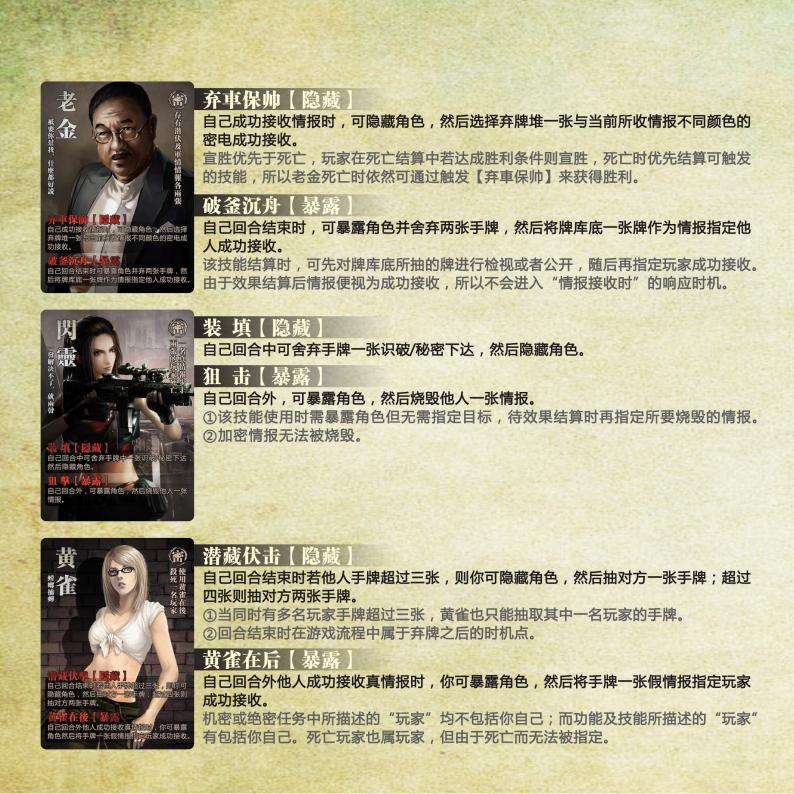
《风声再临》规则书 第 13 页
（本页为三张角色卡，左侧为卡图，右侧为该角色两个技能的详解）
老金
〔角色卡〕
（卡名两侧竖排小字，分辨率不足）
〔?〕
（卡面右上角有一圆形印章图标，内为单字）
弃车保帅【隐藏】：自己成功接收情报时，可隐藏角色，然后选择弃牌堆一张与当前所收情报不同颜色的密电成功接收。
破釜沉舟【暴露】：自己回合结束时，可暴露角色并舍弃两张手牌，然后将牌库底一张牌作为情报指定他人成功接收。
弃车保帅【隐藏】
自己成功接收情报时，可隐藏角色，然后选择弃牌堆一张与当前所收情报不同颜色的密电成功接收。
宣胜优先于死亡，玩家在死亡结算中若达成胜利条件则宣胜，死亡时优先结算可触发的技能，所以老金死亡时依然可通过触发【弃车保帅】来获得胜利。
破釜沉舟【暴露】
自己回合结束时，可暴露角色并舍弃两张手牌，然后将牌库底一张牌作为情报指定他人成功接收。
该技能结算时，可先对牌库底所抽的牌进行检查或者公开，随后再指定玩家成功接收。由于效果结算后情报便视为成功接收，所以不会进入“情报接收时”的响应时机。
闪靈
〔角色卡〕
（卡名两侧竖排小字，分辨率不足）
〔?〕
（卡面右上角有一圆形印章图标，内为单字）
装 填【隐藏】：自己回合中可舍弃手牌中一张识破/秘密下达，然后隐藏角色。
狙 击【暴露】：自己回合外，可暴露角色，然后烧毁他人一张情报。
装 填【隐藏】
自己回合中可舍弃手牌一张识破/秘密下达，然后隐藏角色。
狙 击【暴露】
自己回合外，可暴露角色，然后烧毁他人一张情报。
①该技能使用时需暴露角色但无需指定目标，待效果结算时再指定所要烧毁的情报。
②加密情报无法被烧毁。
黄雀
〔角色卡〕
（卡名两侧竖排小字，分辨率不足）
〔?〕使用黄雀在〔?〕杀死一名玩家
（卡面右上角有一圆形印章图标，内为单字）
潜藏伏击【隐藏】：自己回合结束时若他人手牌超过三张，则你可隐藏角色，然后抽对方一张手牌；超过四张则抽对方两张手牌。
黄雀在后【暴露】：自己回合外他人成功接收真情报时，你可暴露角色然后将手牌一张假情报指定玩家成功接收。
潜藏伏击【隐藏】
自己回合结束时若他人手牌超过三张，则你可隐藏角色，然后抽对方一张手牌；超过四张则抽对方两张手牌。
①当同时有多名玩家手牌超过三张，黄雀也只能抽取其中一名玩家的手牌。
②回合结束时在游戏流程中属于弃牌之后的时机点。
黄雀在后【暴露】
自己回合外他人成功接收真情报时，你可暴露角色，然后将手牌一张假情报指定玩家成功接收。
机密或绝密任务中所描述的“玩家”均不包括你自己；而功能及技能所描述的“玩家”有包括你自己。死亡玩家也属玩家，但由于死亡而无法被指定。
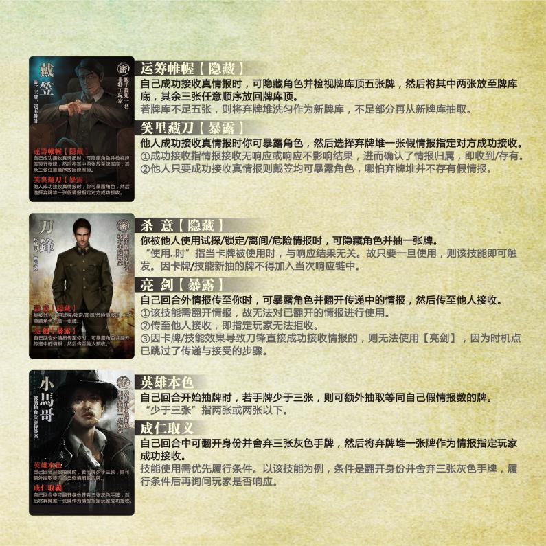
《风声再临》规则书 第 14 页
（本页为三张角色卡，左侧为卡图，右侧为该角色两个技能的详解）
戴笠
〔角色卡〕
（卡名左侧竖排小字）
除了王牌，還有餘計
（卡名右侧竖排小字）
親手殺死一名非特工玩家
（卡面右上角有一圆形印章图标，内为单字「密」）
运筹帷幄【隐藏】：自己成功接收真情报时，可隐藏角色并检视牌库顶五张牌，然后将其中两张放至牌库底，其余三张任意顺序放回牌库顶。
笑里藏刀【暴露】：他人成功接收真情报时，你可暴露角色，然后〔?〕
运筹帷幄【隐藏】
自己成功接收真情报时，可隐藏角色并检视牌库顶五张牌，然后将其中两张放至牌库底，其余三张任意顺序放回牌库顶。
若牌库不足五张，则将弃牌堆洗匀作为新牌库，不足部分再从新牌库抽取。
笑里藏刀【暴露】
他人成功接收真情报时你可暴露角色，然后选择弃牌堆一张假情报指定对方成功接收。
①成功接收指情报接收无响应或响应不影响结果，进而确认了情报归属，即收到/存有。
②他人只要成功接收真情报则戴笠均可暴露角色，哪怕弃牌堆并不存有假情报。
刀鋒
〔角色卡〕
（卡名两侧竖排小字，分辨率不足）
〔?〕
（卡面右上角有一圆形印章图标，内为单字）
杀 意【隐藏】：你被他人使用试探/锁定/离间/危险情报时，可隐藏角色并抽一张牌。
亮 剑【暴露】：自己回合外情报传至你时，可暴露角色并翻开传递中的情报，然后传至他人接收。
杀 意【隐藏】
你被他人使用试探/锁定/离间/危险情报时，可隐藏角色并抽一张牌。
“使用..时”指当卡牌被使用时，与响应结果无关。故只要一旦使用，则该技能即可触发。因卡牌/技能新抽的牌不得加入当次响应链中。
亮 剑【暴露】
自己回合外情报传至你时，可暴露角色并翻开传递中的情报，然后传至他人接收。
①该技能需翻开情报，故无法对已翻开的情报进行使用。
②传至他人接收，即指定玩家无法拒收。
③因卡牌/技能效果导致刀锋直接成功接收情报的，则无法使用【亮剑】，因为时机点已跳过了传递与接受的步骤。
小馬哥
〔角色卡〕
（卡名左侧竖排小字）
我的槍會給你答案
（卡名右侧竖排小字，分辨率不足）
〔?〕
（卡面右上角有一圆形印章图标，内为单字）
英雄本色：自己回合开始抽牌时，若手牌少于三张，则可额外抽取等同自己假情报数的牌。
成仁取义：自己回合中可翻开身份并弃三张灰色手牌，然后将弃牌堆一张牌作为情报指定玩家成功接收。
英雄本色
自己回合开始抽牌时，若手牌少于三张，则可额外抽取等同自己假情报数的牌。
“少于三张”指两张或两张以下。
成仁取义
自己回合中可翻开身份并舍弃三张灰色手牌，然后将弃牌堆一张牌作为情报指定玩家成功接收。
技能使用需优先履行条件。以该技能为例，条件是翻开身份并舍弃三张灰色手牌，履行条件后再询问玩家是否响应。
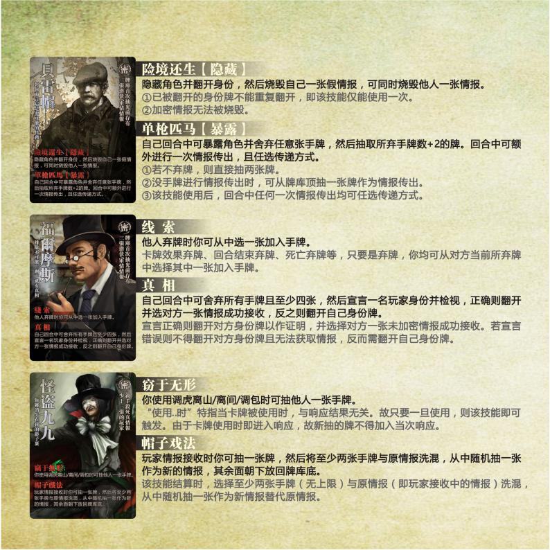
貝雷帽
密
〔竖排闲文小字无法辨认〕
险境还生【隐藏】 隐藏角色并翻开身份，然后烧毁自己一张假情报，可同时烧毁他人一张情报。
单枪匹马【暴露】 自己回合中可暴露角色并舍弃任意张手牌，然后抽取所弃手牌数+2的牌。回合中可额外进行一次情报传出，且任选传递方式。
险境还生【隐藏】
隐藏角色并翻开身份，然后烧毁自己一张假情报，可同时烧毁他人一张情报。
①已被翻开的身份牌不能重复翻开，即该技能仅能使用一次。
②加密情报无法被烧毁。
单枪匹马【暴露】
自己回合中可暴露角色并舍弃任意张手牌，然后抽取所弃手牌数+2的牌。回合中可额外进行一次情报传出，且任选传递方式。
①若不弃牌，则直接抽两张牌。
②没手牌进行情报传出时，可从牌库顶抽一张牌作为情报传出。
③该技能使用后，回合中任何一次情报传出均可任选传递方式。
福爾摩斯
密
〔竖排闲文小字无法辨认〕
线 索 他人弃牌时你可从中选一张加入手牌。
真 相 自己回合中可舍弃所有手牌且至少四张，然后宣言一名玩家身份并检视，正确则翻开并选对方一张情报成功接收，反之则翻开自己身份牌。
线 索
他人弃牌时你可从中选一张加入手牌。
卡牌效果弃牌、回合结束弃牌、死亡弃牌等，只要是弃牌，你均可从对方当前所弃牌中选择其中一张加入手牌。
真 相
自己回合中可舍弃所有手牌且至少四张，然后宣言一名玩家身份并检视，正确则翻开并选对方一张情报成功接收，反之则翻开自己身份牌。
宣言正确则翻开对方身份牌以作证明，并选择对方一张未加密情报成功接收。若宣言错误则不得翻开对方身份牌且无法获取情报，反而需翻开自己身份牌。
怪盜九九
密
〔竖排闲文小字无法辨认〕
窃于无形 你使用调虎离山/离间/调包时可抽他人一张手牌。
帽子戏法 玩家情报接收时你可抽一张牌，然后将至少两张手牌与原情报洗混，从中随机抽一张作为新的情报，其余面朝下放回牌库底。
窃于无形
你使用调虎离山/离间/调包时可抽他人一张手牌。
“使用..时”特指当卡牌被使用时，与响应结果无关。故只要一旦使用，则该技能即可触发。由于卡牌使用时即进入响应，故新抽的牌不得加入当次响应。
帽子戏法
玩家情报接收时你可抽一张牌，然后将至少两张手牌与原情报洗混，从中随机抽一张作为新的情报，其余面朝下放回牌库底。
该技能结算时，选择至少两张手牌（无上限）与原情报（即玩家接收中的情报）洗混，从中随机抽一张作为新情报替代原情报。
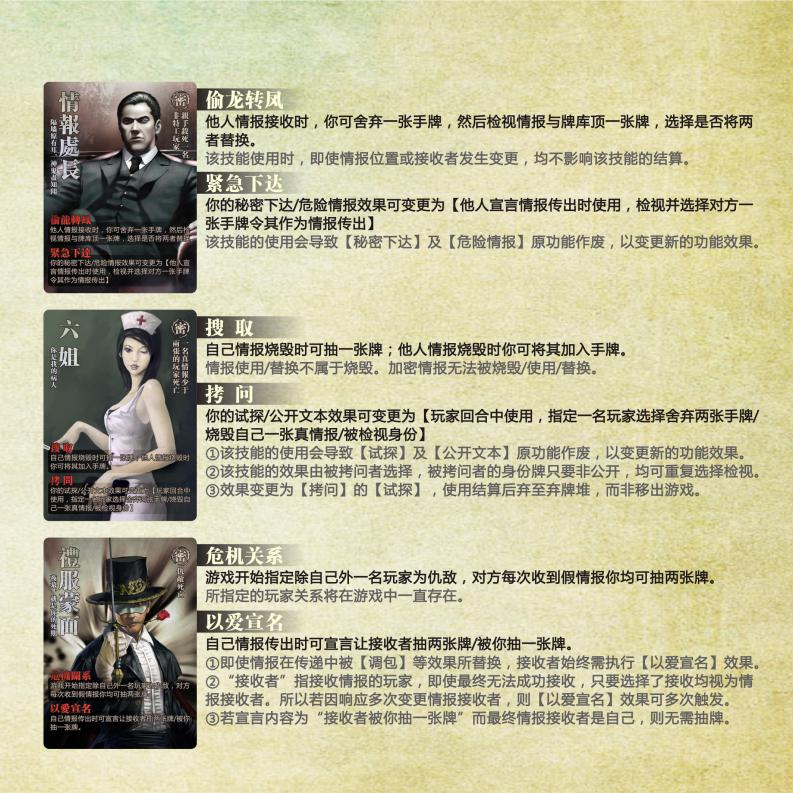
情報處長
密
〔竖排闲文小字无法辨认〕
偷龙转凤 他人情报接收时，你可舍弃一张手牌，然后检视情报与牌库顶一张牌，选择是否将两者替换。
紧急下达 你的秘密下达/危险情报效果可变更为【他人宣言情报传出时使用，检视并选择对方一张手牌令其作为情报传出】
偷龙转凤
他人情报接收时，你可舍弃一张手牌，然后检视情报与牌库顶一张牌，选择是否将两者替换。
该技能使用时，即使情报位置或接收者发生变更，均不影响该技能的结算。
紧急下达
你的秘密下达/危险情报效果可变更为【他人宣言情报传出时使用，检视并选择对方一张手牌令其作为情报传出】
该技能的使用会导致【秘密下达】及【危险情报】原功能作废，以变更新的功能效果。
六姐
密
你是我的病人
搜 取 自己情报烧毁时可抽一张牌；他人情报烧毁时你可将其加入手牌。
拷 问 你的试探/公开文本效果可变更为【玩家回合中使用，指定一名玩家选择舍弃两张手牌/烧毁自己一张真情报/被检视身份】
搜 取
自己情报烧毁时可抽一张牌；他人情报烧毁时你可将其加入手牌。
情报使用/替换不属于烧毁。加密情报无法被烧毁/使用/替换。
拷 问
你的试探/公开文本效果可变更为【玩家回合中使用，指定一名玩家选择舍弃两张手牌/烧毁自己一张真情报/被检视身份】
①该技能的使用会导致【试探】及【公开文本】原功能作废，以变更新的功能效果。
②该技能的效果由被拷问者选择，被拷问者的身份牌只要非公开，均可重复选择检视。
③效果变更为【拷问】的【试探】，使用结算后弃至弃牌堆，而非移出游戏。
禮服蒙面
密
〔竖排闲文小字无法辨认〕
危机关系 游戏开始指定除自己外一名玩家为仇敌，对方每次收到假情报你均可抽两张牌。
以爱宣名 自己情报传出时可宣言让接收者抽两张牌/被你抽一张牌。
危机关系
游戏开始指定除自己外一名玩家为仇敌，对方每次收到假情报你均可抽两张牌。
所指指定的玩家关系将在游戏中一直存在。
以爱宣名
自己情报传出时可宣言让接收者抽两张牌/被你抽一张牌。
①即使情报在传递中被【调包】等效果所替换，接收者始终需执行【以爱宣名】效果。
②“接收者”指接收情报的玩家，即便最终无法成功接收，只要选择了接收均视为情报接收者。所以若因响应多次变更情报接收者，则【以爱宣名】效果可多次触发。
③若宣言内容为“接收者被你抽一张牌”而最终情报接收者是自己，则无需抽牌。
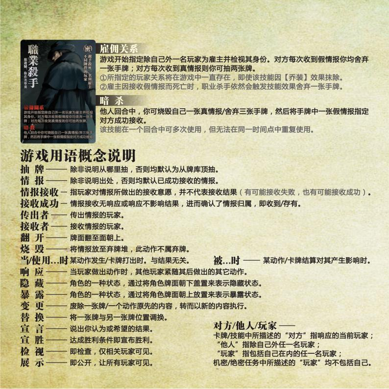
（本页左侧为一张角色卡，右侧为该角色技能详解，下方为游戏用语概念说明）
〔角色卡〕
職業殺手
（卡名两侧竖排小字，分辨率不足）
〔?〕
〔?〕
（卡面右上角有一圆形印章图标，内为单字）
雇佣关系
游戏开始指定除自己外一名玩家为雇主并检视其身份。对方每次收到假情报你均舍弃一张手牌；对方每次收到真情报则你可抽两张牌。
暗杀
他人回合中你可烧毁自己一张真情报/弃三张手牌，然后将手牌中一张假情报指定对方成功接收。
雇佣关系
游戏开始指定除自己外一名玩家为雇主并检视其身份。对方每次收到假情报你均舍弃一张手牌；对方每次收到真情报则你可抽两张牌。
①所指定的玩家关系将在游戏中一直存在，即使该技能因【乔装】效果抹除。
②雇主因接收假情报而死亡时，职业杀手依然会触发技能效果舍弃一张手牌。
暗杀
他人回合中，你可烧毁自己一张真情报/舍弃三张手牌，然后将手牌中一张假情报指定对方成功接收。
该技能在一个回合中可多次使用，但无法在同一时间点中重复使用。
游戏用语概念说明
抽 牌—— 除非说明从哪里抽，否则均默认为从牌库顶抽。
情 报—— 除非说明出处，否则均默认已成功接收的情报。
情报接收— 指玩家对情报所做出的接收意愿，并不代表接收结果（有可能接收失败，也有可能接收成功）。
接收成功— 情报接收无响应或响应不影响结果，进而确认了情报归属，即收到/存有。
传出者—— 传出情报的玩家。
接收者—— 接收情报的玩家。
翻 开—— 牌面翻至面朝上。
烧 毁—— 将情报放至弃牌堆，此动作不属弃牌。
当/使用...时 某动作发生/卡牌打出时。与结果无关。 被...时—— 某动作/卡牌结算对其产生影响时。
响 应—— 当玩家做出动作时，其他玩家紧随其后做出的其它动作。
隐 藏—— 角色的一种状态，通过将角色牌面朝下盖置来表示隐藏状态。
暴 露—— 角色的一种状态，通过将角色牌面朝上放置来表示暴露状态。
变 更—— 废除一张牌/一个动作原先的内容，转而以新的内容执行。
替 换—— 将一张牌与另一张牌位置调换。
宣 言—— 说出你认为或希望的结果。
宣 胜—— 达成胜利条件即宣布胜利。
检 视—— 即检查，仅相关玩家可见。
展 示—— 即公开，让所有玩家可见。
对方/他人/玩家——
卡牌/技能中所描述的“对方”指响应的当前玩家； “他人”指除自己外任一名玩家； “玩家”指包括自己在内的任一名玩家； 机密/绝密任务中所描述的“玩家”均不包括自己。